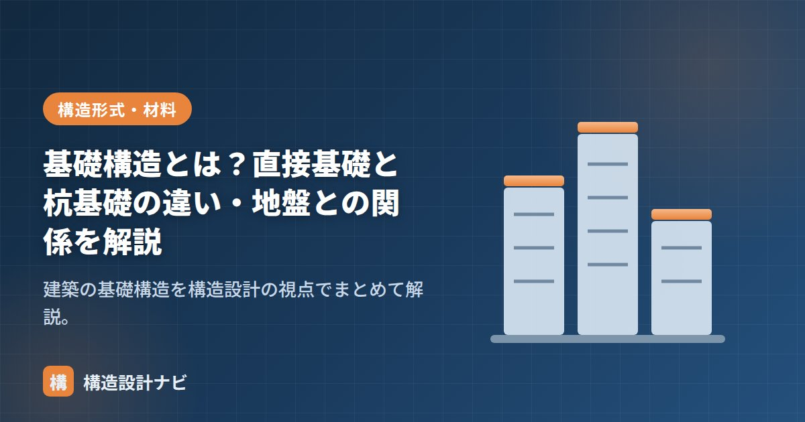

基礎構造とは？直接基礎と杭基礎の違い・地盤との関係を解説

基礎は、建物の重さや地震力を地盤に安全に伝える役割を担う、建物の足元です。どんなに上部構造を頑丈に設計しても、基礎と地盤が不適切なら建物は傾いたり沈んだりします。この記事では基礎構造の種類と、それを決める考え方を整理します。
基礎は大きく2種類
基礎は、建物を支えられる固い地盤（支持層）の深さによって、直接基礎と杭基礎に分かれます。
図：良い地盤が浅ければ直接基礎、深ければ杭基礎で支持層まで力を伝える
直接基礎の種類
| 種類 | 形状 | 主な用途 |
|---|---|---|
| 独立基礎 | 柱の下に独立した基礎 | 地盤が良い場合の柱脚部 |
| 布基礎（連続基礎） | 壁・柱の下に連続した逆T字 | 木造戸建ての定番 |
| べた基礎 | 建物の底面全体を1枚の板で支える | 軟弱地盤・木造で広く普及。荷重を面で分散し不同沈下に強い |
杭基礎の種類
- 支持杭：杭の先端を固い支持層に到達させ、先端支持力で支える。最も確実。
- 摩擦杭：支持層が非常に深い場合に、杭の側面と地盤の摩擦力で支える。
- 施工方法では、既製杭（工場製の杭を打込み・埋込み）と場所打ちコンクリート杭（現場で掘削して造る）がある。
基礎を決める前に：地盤を知る
基礎の設計は地盤調査から始まります。地盤の固さ・支持層の深さを調べ、建物が地盤に与える力（接地圧）が地盤の許容支持力以下になるようにします。
| 調査方法 | 内容 |
|---|---|
| ボーリング調査（標準貫入試験） | N値で地盤の固さを深さごとに把握。中〜大規模建築の標準 |
| スウェーデン式サウンディング（SWS） | 戸建てで一般的な簡易な地盤調査 |
基礎設計の3大注意点
- 支持力：建物の重さに地盤が耐えられるか（接地圧 ≦ 許容支持力）。
- 不同沈下：場所によって沈下量が違うと建物が傾く。べた基礎や杭で防ぐ。
- 液状化：地震時に砂質地盤が水のようになる現象。埋立地・河川沿いで注意。杭基礎や地盤改良で対策する。
- 基礎の選定は「良い地盤がどれだけ深いか」で決まる。浅ければ直接基礎、深ければ杭基礎。
- 上部構造（RC・S・木）の重さも効く。重いRC造ほど基礎・地盤への負担が大きい。
ボーリング調査は点の情報にすぎず、数メートル離れただけで支持層の深さが1m以上ずれていた現場を経験しています。掘削時に想定と違う地盤が出ても対応できるよう、杭長や基礎形式を現場で見直せる余地を設計段階から残しておくのが実務の知恵です。
基礎に伝わる荷重の拾い方は「固定荷重・積載荷重の拾い方」、地震力は「地震力の計算方法」、上部構造の種類は「RC造・S造・SRC造・木造の違い」をどうぞ。
直接基礎3種類の形（図解）
直接基礎は「どの範囲で荷重を地盤に伝えるか」で3種類に分かれます。形を見比べると違いがはっきりします。
同じ建物重量でも、支える面積が広いほど地盤にかかる接地圧は小さくなります。地盤が弱い場合にべた基礎が選ばれるのはこのためです。ただしべた基礎は使用するコンクリート・鉄筋の量が増えるため、地盤が良好であれば布基礎や独立基礎のほうが経済的になります。
杭の施工方法の種類
杭基礎は、杭の材料と施工方法によって細かく分類されます。騒音・振動・支持力・コストのバランスで選定します。
| 分類 | 工法 | 特徴 |
|---|---|---|
| 既製杭 （工場製の杭を使う） | 打込み杭（打撃工法） | ハンマーで打ち込む。支持力は高いが騒音・振動が大きく、市街地では使いにくい |
| 埋込み杭（プレボーリング・中掘り） | 先行して地盤を掘削し杭を挿入。騒音・振動が小さく、現在の主流 | |
| 場所打ち杭 （現場で造る） | アースドリル工法 | 掘削機で穴を掘り、鉄筋かごを建て込んでコンクリートを打設。大口径に対応 |
| オールケーシング・リバース工法 | 孔壁の保護方法が異なる。地盤条件や深さで使い分ける |
既製杭は工場製品なので品質が安定し工期も短い一方、運搬できる長さ・径に制約があります。場所打ち杭は大口径・長尺に対応でき、高層建築で多く採用されますが、現場でコンクリートを打つため品質管理が重要になります。市街地の中低層建築では埋込み杭、大規模建築では場所打ち杭という使い分けが一般的です。
よくある質問
Q1. べた基礎と布基礎はどちらが優れていますか？
地盤条件によります。べた基礎は底面全体で支えるため接地圧が小さく、軟弱地盤や不同沈下が懸念される場合に有利です。一方、地盤が良好であれば布基礎で十分な支持力が得られ、コンクリート量が少ないため経済的です。近年の木造住宅ではべた基礎が主流ですが、これは防湿性や施工性の面でも利点があるためで、常にべた基礎が構造的に優れているわけではありません。
Q2. 支持杭と摩擦杭はどう使い分けますか？
支持層の深さで決まります。杭の届く範囲に固い支持層があれば、先端で支える支持杭とするのが原則で、支持力が確実に得られます。しかし支持層が極端に深く、そこまで杭を打つのが現実的でない場合に、杭の側面と地盤との摩擦力で支える摩擦杭を採用します。摩擦杭は支持力の評価が難しく、沈下量の検討がより重要になります。
Q3. 地盤改良と杭基礎はどちらを選ぶべきですか？
軟弱層の厚さと建物規模で判断します。軟弱層が比較的浅い（数メートル程度）場合は、表層改良や柱状改良で地盤自体を強くするほうが経済的です。軟弱層が厚く支持層が深い場合や、建物が重い場合は杭基礎が確実です。また、液状化のおそれがある場合は、液状化層を貫いて支持層に達する杭が有効な対策になります。
まとめ
- 基礎は建物の力を地盤に伝える足元。支持層が浅ければ直接基礎、深ければ杭基礎。
- 直接基礎は独立・布・べた、杭基礎は支持杭・摩擦杭。
- 地盤調査をもとに、支持力・不同沈下・液状化の3点を確認して設計する。